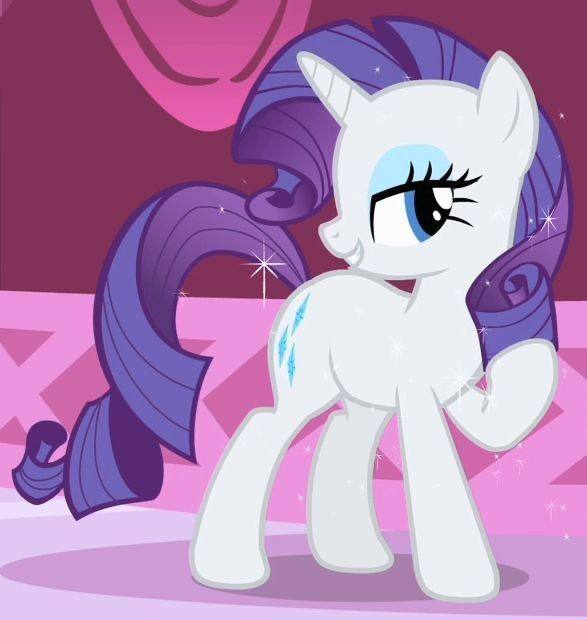
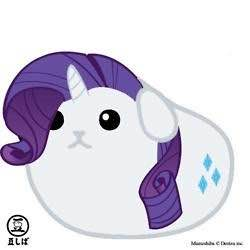
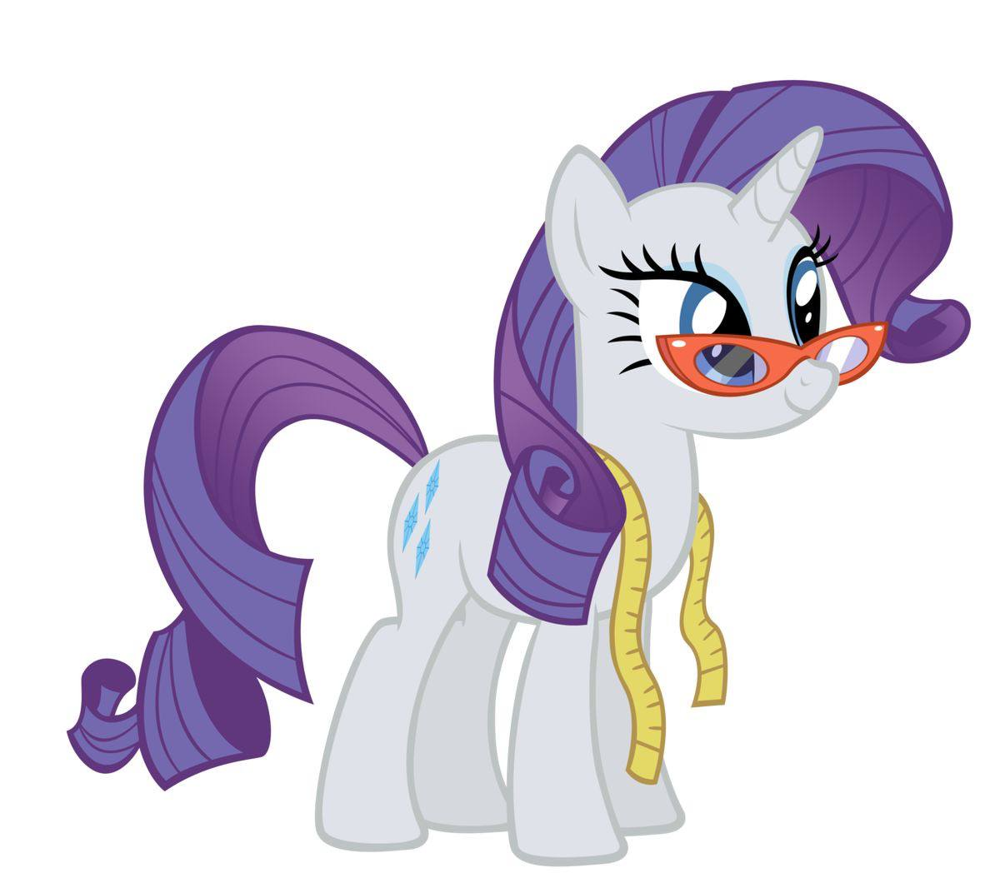

Рарити — одна из главных героинь «Дружба — это чудо». Она старшая сестра Свити Белль и объект давней влюблённости Спайка. Рарити живёт и работает в собственном магазине в Понивилле под названием «Бутик Карусель», где она ухаживает за своей персидской кошкой Опалесценцией. Она олицетворяет элемент щедрости.
Рэрити рассказывает, как она получила свой знак отличия в «Хрониках знаков отличия». Будучи кобылкой, она мечтала стать модницей и пыталась создать «эффектные» костюмы для школьного спектакля, хотя её учительница называла их просто «хорошенькими». Рэрити расстроилась из-за того, что ей не удалось переделать костюмы так, как она хотела, и уже собиралась сдаться, но тут её рог внезапно засиял ярким светом и перенёс её далеко за пределы земли в большой валун. Поначалу Рарити расстроилась из-за этого, казалось бы, бессмысленного путешествия, но пришла в восторг, когда ударная волна от далёкого взрыва расколола валун и внутри обнаружилась целая сокровищница драгоценных камней. Она вставила камни в свои костюмы, и в тот вечер, когда они вызвали восхищение как у её учителя, так и у зрителей, у неё появился знак отличия.

Рэрити очень заботится о красоте — как своей, так и других. Она спешит Твайлайт Спаркл в бутик «Карусель», чтобы привести в порядок её растрёпанную гриву, когда они впервые встречаются в «Дружба — это чудо», часть 1, а в «Дружба — это чудо», часть 2 Рэрити одна сочувствует морскому змею, который в отчаянии из-за своих испорченных усов. В «Подходящей для успеха» Рарити очень тщательно продумывает торжественные платья для остальных главной шестёрки и организует показ мод, чтобы продемонстрировать их.
Рэрити хорошо разбирается в моде и старается быть в курсе последних тенденций. В Секрете моего излишества она предвидит, что накидки из тафты с рюшами станут популярными, и просит Сумеречную Искорку принести ей книги об этом, чтобы «быть на шаг впереди». Наряд Рэрити впечатляет модных критиков в Зелёный — не твой цвет, и они приходят к выводу, что она «явно разбирается в моде». В Рарити покоряет Манхэттен после того, как Сури Поломар представляет фирменную ткань Рарити как свою собственную на конкурсе моды в Манхэттене, Рарити за одну ночь разрабатывает совершенно новую линию, основанную на эстетике её отеля, и в итоге занимает первое место. Рэрити иногда слишком трепетно относится к своему внешнему виду и чистоте. В «Найтмэр», несмотря на опасения, что её «прекрасно уложенная грива будет испорчена» во время грозы, она отказывается прятаться под столом для пикника из-за грязной лужи. Когда Шестёрка готовится сразиться с драконом на вершине горы в «Драгоншай», Рэрити боится, что забыла взять тиару, которая подходила бы к её шарфу. В MMMystery на «Экспрессе дружбы», когда ей предъявляют накладную ресницу в качестве доказательства того, что она откусила кусочек от торта с конкурса , Рэрити драматично признаётся, что пользуется накладными ресницами, а затем так же непринуждённо признаётся, что съела торт. В Волшебной дуэли Рэрити безутешна, когда Трикси волшебным образом одевает её в платье, в котором преобладают коричневые оттенки, которые «следует использовать только для акцентов».
В «Сказочках у костра» Рэрити также подчёркивает ценность внутренней красоты, о чём свидетельствует её история о Мистмейн, которая отказалась от своей красоты, чтобы спасти подругу, и посвятила свою жизнь распространению красоты по Эквестрии. Когда её грива портится в «Дело не в твоей гриве», Рэрити впадает в депрессию, но когда друзья напоминают ей обо всём, чего она добилась, она раскрывает свою внутреннюю красоту с помощью совершенно нового образа, который становится популярным и вдохновляет на создание нового модного тренда.
В нескольких эпизодах показано, как Рэрити стремится привлечь к себе внимание и добиться признания публики. Когда Флаттершай начинает карьеру модели в эпизоде «Зелёный — не твой цвет», Рэрити ревнует подругу к славе и заявляет, что она должна быть той, кого «окружают незнакомцы». В Sonic Rainboom Рэрити радуется, когда её временные крылья вызывают восхищение у Облачной долины Пегасов, и в конце концов соглашается участвовать в соревновании «Лучший молодой летун», хотя изначально хотела поддержать Рейнбоу Дэш в этом состязании. В Sweet and Elite Рэрити лжёт своим друзьям, чтобы провести больше времени в Кантерлоте и повысить свою популярность среди городской элиты.

Рарити обычно ведёт себя достойно и грациозно и красноречиво говорит с трансатлантическим акцентом. Иногда она использует французскую лексику, когда говорит о моде, и часто обращается к другим «дорогая».
Рэрити гордится тем, что уделяет внимание деталям в своей работе, хотя иногда это приводит к тому, что она упускает из виду более важные вещи. Когда в «Взгляни, прежде чем уснуть» в спальню Сумеречной Искорки падает дерево, Рэрити не обращает на него внимания, а вместо этого пытается привести в порядок покосившуюся книжную полку. В «Зимнем подведении итогов» она проводит большую часть дня, пытаясь починить испорченное птичье гнездо Сумеречной Искорки, вместо того чтобы делать новые, что приводит к задержкам в Понивилле «Зимнем подведении итогов».
В трудных ситуациях Рарити может проявить твёрдость и находчивость. Когда её похитили Алмазные псы в Шоу собак и пони и заставили искать драгоценные камни, она вывела псов из себя своим непрекращающимся нытьём и в конце концов убедила их отпустить её с несколькими тележками драгоценных камней. В Рое века другие пони встревожены неожиданным размножением их питомцев параспрайтов, а Рэрити использует своих в Бутике Карусели и говорит, что они «весьма полезны». В Погоне за драконом Рэрити говорит группе драконов-подростков, угрожающих Спайку, что она «разорвёт их на куски», если они нападут.
Всякий раз, когда Рарити оказывается в стрессовой ситуации, она склонна съедать большое количество мороженого, как показано в Проявлении вдохновения, P.P.O.V. (Точка зрения пони) или Дело не в гриве.
Рэрити олицетворяет элемент щедрости; несмотря на свою заботу о внимании и собственной красоте, она обычно проявляет сочувствие и самоотверженность по отношению к другим. В «Дружба — это чудо», часть 1 она настаивает на том, чтобы сделать Искорку красивой, а в «Дружба — это чудо», часть 2 Рэрити отрезает свой хвост и использует его, чтобы подправить усы Стивена Магнета.
В «Подходящем наряде для успеха» Рэрити создаёт нарядное платье для каждой из своих пяти подруг. Когда они не одобряют её дизайн, она соглашается сшить новые платья по их эскизам, несмотря на то, что, по её мнению, это «самые уродливые платья, которые она когда-либо шила». В «Секрете моего излишества» Рэрити настолько вдохновляется, когда Спайк дарит ей свой драгоценный огненный рубин, что создаёт новые накидки из тафты для каждой из своих подруг.
Когда Свити Белль отказывается воссоединиться со своей сестрой в Sisterhooves Social, Эпплджек говорит Рарити, что сестринство — это отношения, в которых нужно и отдавать, и брать, и предлагает ей больше отдавать. Для этого Рарити использует грязь, чтобы замаскироваться под Эпплджек, и участвует вместе со Свити в мероприятии Sisterhooves Social. В «Рарити покоряет Манхэттен» Рарити устраивает для своих друзей эксклюзивное представление мюзикла, билеты на которое были распроданы, в обмен на создание нарядов для следующего показа художника по костюмам. Этот поступок убеждает помощницу её соперницы, Коко Поммель, уволиться и поверить, что «для неё есть кое-что получше».
В «Возвращении Хармони. Часть 1»Дискорда убеждает Рэрити выкопать алмаз вместо того, чтобы искать своих друзей в лабиринте из живой изгороди. Когда Твайлайт находит её и указывает на то, что «алмаз» — это просто большой валун, Рэрити не соглашается с этим утверждением и настаивает на том, чтобы взять с собой предполагаемый драгоценный камень, несмотря на то, что он замедляет продвижение группы. Она души не чает в этом камне и начинает собирать другие ценности в «Возвращении Хармони. Часть 2», хотя Твайлайт в конце концов возвращает её в нормальное состояние с помощью заклинания памяти.
В «Мой маленький пони: Фильм» Рэрити проявляет щедрость по отношению к Кэпперу, когда чинит его и пришивает золотые пуговицы к его платью. Это заставляет его пересмотреть свой образ жизни мошенника и помочь Рэрити и её друзьям сбить со следа Тёмную Бурю.

Свити Белль представлена как младшая сестра Рэрити в «Мастеру взглядов». Её неуклюжесть в сочетании с настойчивым желанием помочь испытывают терпение Рэрити, и в конце концов она просит Свити Белль дать ей спокойно поработать. Свити Белль «заимствует» у Рэрити важные материалы в «Мастере взглядов» и «Шоу-стопперах», используя её самые дорогие ткани для пошива любительских костюмов для своих друзей. Несмотря на то, что стремление Свити помочь часто приводит к беспорядку, они с Рэрити действительно любят друг друга и заботятся друг о друге. В конце Sisterhooves Social они соглашаются принимать и любить друг друга такими, какие они есть, и отправляют Селестии письмо, в котором рассказывают, что быть сёстрами — это в первую очередь весело, но также требует компромиссов и усилий для поддержания крепких отношений.
В «Бессоннице в Понивилле» Свити Белль приглашает Рарити отправиться в поход с Эппл Блум, Эпплджек, Скуталу и Рэйнбоу Дэш. Сначала Рарити отказывается, потому что обычно ей не нравится находиться на природе, но, увидев разочарованные лица Свити, она неохотно соглашается. Хотя Рарити не обязательно плохо относится к Свити Белль, она заставляет её нести весь багаж и ждать, пока они разобьют лагерь. Позже Рарити проявляет сочувствие к Свити Белль: она позволяет Скуталу нести её багаж, чтобы дать Свити Белль отдохнуть, утешает её, когда та пугается историй о привидениях, которые рассказывает Рэйнбоу Дэш, и радостно бежит с ней в конце эпизода.
В Sisterhooves Social ненадолго появляются родители Рарити и Свити Белль. У них среднеамериканский акцент, они беззаботны и совершенно не похожи на Рарити. Её отец — белый единорог (впервые показан на странице 145 My Little Pony: The Elements of Harmony, во второй раз — на странице 16 My Little Pony: Friendship is Magic Выпуск № 9, а в третий раз — в Inspiration Manifestation) с каштановой гривой и усами и очень густыми бровями по сравнению с другими жеребцами. Её мать — розовый единорог с телом и гривой, похожими на миссис Кейк, хотя её грива немного светлее, чем королевская фиолетовая грива Рарити.
У Рэрити есть кошка по имени Опалесценция, которая поддерживает её в «Подходящей для успеха». Однако в «Учителе взглядов» у Рэрити, похоже, возникают проблемы с кошкой, и она просит помощи у Флаттершай. В «Лучшей ночи в жизни» Опалесценция отпугивает мышей, которых Сумеречная Искорка превратила в лошадей, чтобы те везли их карету на бал. Опал впервые появляется во втором сезоне, когда Рэрити надевает на неё свой уменьшенный шерстяной свитер в «Сестринских копытцах». В следующий раз она появляется в Пусть победит лучший питомец!, где она участвует в одном из испытаний для потенциальных питомцев Рэйнбоу Дэш. Она снова появляется в Милые и элитные, сопровождая Рэрити в её поездке в Кантерлот, где она пытается напомнить Рэрити о необходимости поработать над новым праздничным платьем Твайлайт Спаркл, когда Рэрити слишком увлекается социальными обязательствами. Когда её друзья приходят в её покои в замке, Рэрити быстро окунает Опал в воду, чтобы подтвердить свою выдумку о том, почему она не смогла приехать в Понивилль на день рождения Твайлайт, к большому неудовольствию Опал.